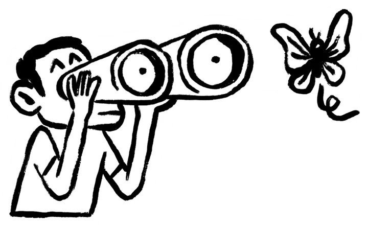

Things I’ve designed
So, how do I get there?
A little curiosity, a lot of questions, and a few unexpected turns.
Here’s how an idea finds its way into the world.
The way things are isn’t the only way.
A little more of what I make.
Experiments, photographs, class projects, and other things I’ve made along the way.
Tap to take a look
Always excited to learn, design, and grow.
Let’s explore what we can create together.
© 2026 Rajat Chaple · Designed and built with care